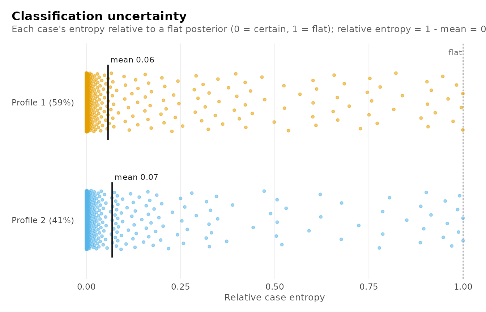
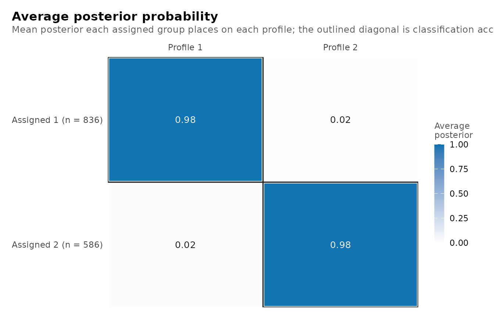
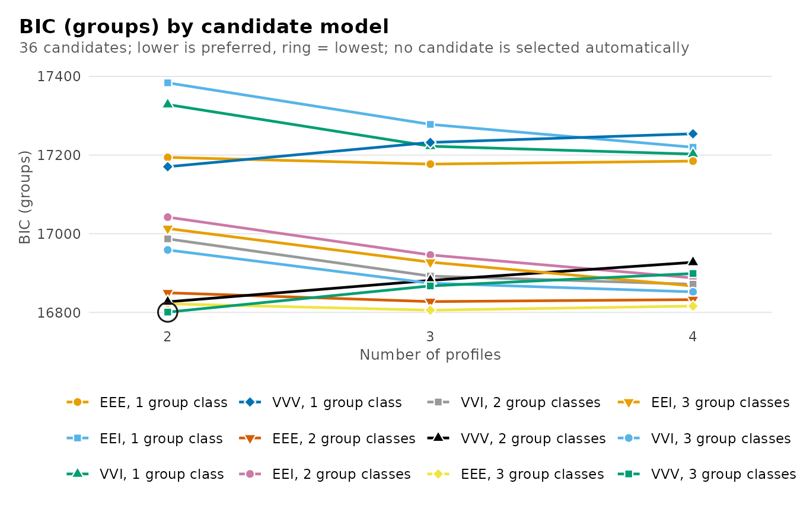

Evaluating a multilevel latent profile model with the latents R package
Mohammed Saqr
University of Eastern FinlandSonsoles López-Pernas
University of Eastern FinlandSource:
vignettes/articles/evaluation.Rmd
evaluation.RmdA fitted mixture model is evaluated on four questions: whether the estimation found a stable solution, how clearly observations and groups are classified, whether the indicators are independent within profiles as the model assumes, and whether a different number of profiles or group classes fits better. These questions follow current guidance for latent profile analysis (Spurk et al., 2020; Scrucca et al., 2024), and they matter because the profiles of a person-centred model are interpreted as substantive subgroups (Saqr et al., 2024). This guide shows the functions that answer each of them for a two-level model.
Data
course_engagement has one row per course enrolment:
1,422 enrolments from 106 students. student identifies the
group, and five activity measures (browse,
lectures, forum_read, forum_post,
attendance) are the indicators, each standardized within
course.
The model to evaluate
multilpa() fits the model, with vars for
the indicators, id for the group, n_profiles
for the number of profiles, n_group_classes for the number
of group classes, n_starts for the number of random EM
starts, and seed for reproducible starts. The model
evaluated first uses the default diagonal covariance structure.
Estimation
get_results() with "model" reports the
convergence of the fit. converged reports convergence of
the best start, boundary whether a variance reached its
lower bound, and n_best_replicated how many starts reached
the best log likelihood. A variance at its lower bound in a profile of
about one observation is a degenerate solution; fitting with
boundary = "exclude" keeps the best start without one. A
profile with fewer effective members than its own means and variances
raises a latents_thin_profiles warning: its variances are
poorly determined, so inspect its covariance diagnostics before
interpreting it.
get_results(fit, "model")
#> n_observations n_informative n_groups n_profiles n_group_classes centering scaling
#> 1 1422 1422 106 2 2 none none
#> covariance_structure n_parameters n_parameters_with_measurement log_likelihood aic bic_groups
#> 1 VVI 23 23 -8440 16926 16987
#> bic_individual converged iterations boundary small_classes best_start n_best_replicated weights
#> 1 17047 TRUE 9 FALSE FALSE 1 3 <NA>get_results() with "starts" reports every
start.
get_results(fit, "starts")
#> start log_likelihood converged iterations error boundary
#> 1 1 -8440 TRUE 9 <NA> FALSE
#> 2 2 -8440 TRUE 12 <NA> FALSE
#> 3 3 -8440 TRUE 9 <NA> FALSEsensitivity() refits the model from the seeds given in
seeds and reports whether they reach the same solution.
optimum numbers the distinct maxima found, and
agreement is the share of observations assigned as in the
original fit, after matching the arbitrary profile labels.
sensitivity(fit, seeds = 1:3)
#> seed log_likelihood converged iterations optimum best agreement
#> 1 1 -8440 TRUE 9 1 TRUE 1
#> 2 2 -8440 TRUE 9 1 TRUE 1
#> 3 3 -8440 TRUE 9 1 TRUE 1All three starts reach the log likelihood of -8440, and all three seeds reach it with identical assignments, so the solution does not depend on the starting values.
Classification
get_results() with "entropy" reports the
relative entropy (Ramaswamy et al., 1993) for observations and for
groups: 1 means every case is assigned with certainty, 0 means no
separation.
get_results(fit, "entropy")
#> level n_classes n_units entropy_sum relative_entropy
#> 1 individuals 2 1422 60.94 0.938
#> 2 groups 2 106 4.43 0.940get_results() with "classification" reports
the classification quality of every class. n_modal is the
number of cases assigned to the class, average_posterior
the mean posterior probability of those cases, and
odds_correct_classification compares that certainty with
the class’s size (Nagin, 2005).
get_results(fit, "classification")
#> level class n_modal proportion_modal estimated_n estimated_proportion average_posterior
#> 1 individuals 1 836 0.588 834.1 0.587 0.985
#> 2 individuals 2 586 0.412 587.9 0.413 0.982
#> 3 groups 1 35 0.330 34.5 0.325 0.969
#> 4 groups 2 71 0.670 71.5 0.675 0.992
#> odds_correct_classification
#> 1 46.1
#> 2 76.4
#> 3 64.8
#> 4 59.9Relative entropy is 0.938 for the enrolments and 0.940 for the students, and the average posterior probabilities of the two profiles are 0.985 and 0.982: the classification is clear at both levels.
plot_diagnostics() draws the uncertainty:
what = "entropy" the per-case uncertainty within each
profile, and what = "avepp" the average posterior of each
assigned class across all classes.
plot_diagnostics(fit, what = "entropy")
plot_diagnostics(fit, what = "avepp")
Local independence
The default model assumes the indicators are independent within a
profile. get_results() with "residuals" tests
this: residual is the correlation between two indicators
that the profiles leave unexplained, and by = "overall"
pools the profiles. The p-values are approximate and are adjusted for
multiple testing (Benjamini & Hochberg, 1995).
get_results(fit, "residuals", by = "overall")
#> profile indicator_1 indicator_2 kind observed expected residual effective_n statistic df
#> 1 overall forum_read attendance gaussian 0.21588 0 0.21588 1422 8.2620 NA
#> 2 overall lectures attendance gaussian 0.19234 0 0.19234 1422 7.3369 NA
#> 3 overall browse attendance gaussian 0.18077 0 0.18077 1422 6.8850 NA
#> 4 overall forum_post attendance gaussian 0.17239 0 0.17239 1422 6.5594 NA
#> 5 overall browse forum_read gaussian 0.06265 0 0.06265 1422 2.3632 NA
#> 6 overall browse forum_post gaussian -0.02511 0 -0.02511 1422 -0.9461 NA
#> 7 overall browse lectures gaussian -0.02126 0 -0.02126 1422 -0.8009 NA
#> 8 overall forum_read forum_post gaussian 0.01986 0 0.01986 1422 0.7483 NA
#> 9 overall lectures forum_post gaussian 0.01710 0 0.01710 1422 0.6440 NA
#> 10 overall lectures forum_read gaussian 0.00193 0 0.00193 1422 0.0725 NA
#> p_value p_adjusted
#> 1 1.43e-16 1.43e-15
#> 2 2.19e-13 1.09e-12
#> 3 5.78e-12 1.93e-11
#> 4 5.40e-11 1.35e-10
#> 5 1.81e-02 3.62e-02
#> 6 3.44e-01 5.68e-01
#> 7 4.23e-01 5.68e-01
#> 8 4.54e-01 5.68e-01
#> 9 5.20e-01 5.77e-01
#> 10 9.42e-01 9.42e-01The four largest residuals all involve attendance (0.17
to 0.22, adjusted p-values below 0.001), so the assumption does not hold
for these data; attendance is generated from the four click
measures (?course_engagement).
covariance_model = "full" relaxes the assumption by
estimating the covariances between indicators within each profile, and
get_results() with "information_criteria"
compares the two models; lower values are better.
full <- multilpa(course_engagement,
vars = c("browse", "lectures", "forum_read", "forum_post",
"attendance"),
id = "student", n_profiles = 2, n_group_classes = 2,
covariance_model = "full", n_starts = 3, seed = 1)
get_results(fit, "information_criteria")
#> log_likelihood n_parameters aic kic bic_groups bic_individual sabic_groups sabic_individual
#> 1 -8440 23 16926 16952 16987 17047 16914 16974
#> caic_groups caic_individual awe_groups awe_individual icl_groups icl_individual clc_groups
#> 1 17010 17070 17292 17412 17116 17176 17009
#> clc_individual
#> 1 17009
get_results(full, "information_criteria")
#> log_likelihood n_parameters aic kic bic_groups bic_individual sabic_groups sabic_individual
#> 1 -8313 43 16712 16758 16827 16938 16691 16802
#> caic_groups caic_individual awe_groups awe_individual icl_groups icl_individual clc_groups
#> 1 16870 16981 17346 17570 17017 17128 16816
#> clc_individual
#> 1 16816
get_results(full, "residuals", by = "overall")
#> profile indicator_1 indicator_2 kind observed expected residual effective_n statistic df
#> 1 overall forum_post attendance gaussian 0.18790 0.18790 1.06e-08 1422 4.13e-07 NA
#> 2 overall forum_read forum_post gaussian 0.02435 0.02435 9.66e-09 1422 3.64e-07 NA
#> 3 overall browse forum_post gaussian -0.01867 -0.01867 7.66e-09 1422 2.88e-07 NA
#> 4 overall forum_read attendance gaussian 0.24179 0.24179 6.82e-09 1422 2.73e-07 NA
#> 5 overall browse attendance gaussian 0.20383 0.20383 5.24e-09 1422 2.06e-07 NA
#> 6 overall lectures forum_post gaussian 0.02007 0.02007 4.81e-09 1422 1.81e-07 NA
#> 7 overall browse forum_read gaussian 0.07442 0.07442 4.11e-09 1422 1.56e-07 NA
#> 8 overall lectures attendance gaussian 0.20502 0.20502 3.02e-09 1422 1.19e-07 NA
#> 9 overall lectures forum_read gaussian 0.00885 0.00885 2.62e-09 1422 9.88e-08 NA
#> 10 overall browse lectures gaussian -0.01381 -0.01381 2.09e-09 1422 7.86e-08 NA
#> p_value p_adjusted
#> 1 1 1
#> 2 1 1
#> 3 1 1
#> 4 1 1
#> 5 1 1
#> 6 1 1
#> 7 1 1
#> 8 1 1
#> 9 1 1
#> 10 1 1The full model lowers the BIC with students as units from 16,987 to 16,827. Its residuals are zero, because it estimates every within-profile covariance; the residual check is informative only for a model that restricts them. The full model is the one to evaluate further.
Number of profiles and group classes
enumerate_classes() compares numbers of profiles and
group classes, with n_profiles and
n_group_classes for the counts to cross. It crosses the
counts with four covariance structures, equal or varying variances with
and without covariances, fits every combination, and does not choose a
model.
candidates <- enumerate_classes(course_engagement,
vars = c("browse", "lectures", "forum_read",
"forum_post", "attendance"),
id = "student", n_profiles = 2:4,
n_group_classes = 1:3, n_starts = 3, seed = 1)
#> Warning: Profile 2: 18.6 Gaussian membership mass for 20 free means and variances. This is a
#> conservative diagnostic, not an identification test; inspect the Gaussian covariance diagnostics.
#> 7 of 36 candidates reached their best log likelihood from one start only (profiles4_groups1_EEE, profiles4_groups2_EEE, profiles4_groups3_EEE, profiles4_groups1_VVV, profiles3_groups2_VVV, profiles4_groups2_VVV, ...); refit those you consider with more starts.
subset(as.data.frame(candidates), model == "VVV")
#> candidate n_profiles n_group_classes model log_likelihood n_parameters aic kic
#> 28 profiles2_groups1_VVV 2 1 VVV -8490 41 17061 17105
#> 29 profiles3_groups1_VVV 3 1 VVV -8472 62 17067 17132
#> 30 profiles4_groups1_VVV 4 1 VVV -8434 83 17033 17119
#> 31 profiles2_groups2_VVV 2 2 VVV -8313 43 16712 16758
#> 32 profiles3_groups2_VVV 3 2 VVV -8289 65 16708 16776
#> 33 profiles4_groups2_VVV 4 2 VVV -8261 87 16696 16786
#> 34 profiles2_groups3_VVV 2 3 VVV -8295 45 16681 16729
#> 35 profiles3_groups3_VVV 3 3 VVV -8275 68 16686 16757
#> 36 profiles4_groups3_VVV 4 3 VVV -8237 91 16656 16750
#> bic_groups bic_individual sabic_groups sabic_individual caic_groups caic_individual awe_groups
#> 28 17170 17277 17041 17147 17211 17318 17732
#> 29 17232 17393 17036 17196 17294 17455 18344
#> 30 17254 17470 16992 17206 17337 17553 18315
#> 31 16827 16938 16691 16802 16870 16981 17346
#> 32 16881 17050 16676 16844 16946 17115 17593
#> 33 16927 17153 16652 16877 17014 17240 18366
#> 34 16801 16917 16658 16775 16846 16962 17360
#> 35 16867 17044 16652 16828 16935 17112 17958
#> 36 16899 17135 16611 16846 16990 17226 18195
#> awe_individual icl_groups icl_individual clc_groups clc_individual profile_entropy group_entropy
#> 28 17945 17418 17524 17226 17226 0.875 NA
#> 29 18666 17869 18030 17580 17580 0.796 NA
#> 30 18746 17679 17894 17292 17292 0.892 NA
#> 31 17570 17017 17128 16816 16816 0.906 0.942
#> 32 17931 17095 17264 16792 16792 0.933 0.943
#> 33 18818 17699 17925 17293 17293 0.805 0.946
#> 34 17593 17015 17132 16805 16805 0.909 0.816
#> 35 18312 17437 17614 17120 17120 0.828 0.824
#> 36 18667 17497 17734 17073 17073 0.855 0.837
#> avepp_min avepp_max avepp_mean avepp_below group_avepp_min group_avepp_max group_avepp_mean
#> 28 0.959 0.971 0.965 0 NA NA NA
#> 29 0.665 0.956 0.833 1 NA NA NA
#> 30 0.630 0.958 0.837 1 NA NA NA
#> 31 0.973 0.978 0.976 0 0.971 0.993 0.982
#> 32 0.796 0.976 0.915 1 0.979 0.990 0.985
#> 33 0.802 0.974 0.856 0 0.962 0.995 0.979
#> 34 0.974 0.978 0.976 0 0.903 0.960 0.923
#> 35 0.650 0.973 0.841 1 0.878 0.955 0.920
#> 36 0.649 0.967 0.838 1 0.881 0.976 0.928
#> group_avepp_below converged boundary min_standardized_eigenvalue min_gaussian_mass
#> 28 NA TRUE FALSE 0.269614 577.4
#> 29 NA TRUE FALSE 0.120317 112.7
#> 30 NA TRUE FALSE 0.000276 26.1
#> 31 0 TRUE FALSE 0.271042 583.2
#> 32 0 TRUE FALSE 0.011064 18.6
#> 33 0 TRUE FALSE 0.001958 26.3
#> 34 0 TRUE FALSE 0.272051 589.5
#> 35 0 TRUE FALSE 0.120469 116.5
#> 36 0 TRUE FALSE 0.002424 26.9
#> n_best_replicated
#> 28 3
#> 29 2
#> 30 1
#> 31 3
#> 32 1
#> 33 1
#> 34 3
#> 35 2
#> 36 1
#> warnings
#> 28
#> 29
#> 30
#> 31
#> 32 Profile 2: 18.6 Gaussian membership mass for 20 free means and variances. This is a conservative diagnostic, not an identification test; inspect the Gaussian covariance diagnostics.
#> 33
#> 34
#> 35
#> 36
#> error
#> 28 <NA>
#> 29 <NA>
#> 30 <NA>
#> 31 <NA>
#> 32 <NA>
#> 33 <NA>
#> 34 <NA>
#> 35 <NA>
#> 36 <NA>get_results() with "best" gives the
candidate that minimizes each criterion. Criteria that depend on a
sample size are reported with the number of groups and with the number
of observations.
get_results(candidates, "best")
#> criterion convention candidate n_profiles n_group_classes model value
#> 1 aic <NA> profiles4_groups3_VVV 4 3 VVV 16656
#> 2 kic <NA> profiles2_groups3_VVV 2 3 VVV 16729
#> 3 bic groups profiles2_groups3_VVV 2 3 VVV 16801
#> 4 bic individuals profiles2_groups3_EEE 2 3 EEE 16900
#> 5 sabic groups profiles4_groups3_VVV 4 3 VVV 16611
#> 6 sabic individuals profiles2_groups3_VVV 2 3 VVV 16775
#> 7 caic groups profiles3_groups3_EEE 3 3 EEE 16844
#> 8 caic individuals profiles2_groups3_EEE 2 3 EEE 16930
#> 9 awe groups profiles2_groups2_EEE 2 2 EEE 17267
#> 10 awe individuals profiles2_groups2_VVI 2 2 VVI 17412
#> 11 icl groups profiles2_groups3_VVV 2 3 VVV 17015
#> 12 icl individuals profiles2_groups3_EEE 2 3 EEE 17122
#> 13 clc groups profiles3_groups2_VVV 3 2 VVV 16792
#> 14 clc individuals profiles3_groups2_VVV 3 2 VVV 16792The BIC (Schwarz, 1978) with students as units is lowest for two
profiles, three group classes and the VVV structure, and
most criteria select two profiles with a structure that estimates
covariances. The Class
enumeration article examines the choice between two and three group
classes on these data.
plot_enumeration() draws one criterion across the grid,
named in what; what = "all" draws every
criterion.
plot_enumeration(candidates, what = "bic_groups")
get_candidate() takes one candidate out of the grid as a
fitted model, given by its n_profiles,
n_group_classes and model.
get_candidate(candidates, n_profiles = 2, n_group_classes = 3, model = "VVV")
#> Two-level latent profile analysis: 2 profiles, 3 group classes
#> 1422 individuals in 106 groups; varying full residual covariance (VVV)
#> Log likelihood: -8295.382659 | AIC: 16680.765 | BIC (groups): 16800.620
#> Converged: TRUE | iterations: 18 | best log likelihood reached by 3 of 3 starts (3 converged)
#> Smallest standardized Gaussian eigenvalue: 0.2721 (profiles, profile_2); Gaussian mass: 589.5; weight effective n: 616.
#>
#> Class sizes profile_1 58.5% (833) profile_2 41.5% (589)
#> Group classes group_class_1 29.0% (31) group_class_2 24.9% (26) group_class_3 46.0% (49)
#>
#> Means
#> indicator profile_1 profile_2
#> browse 0.537 -0.758
#> lectures 0.428 -0.605
#> forum_read 0.618 -0.873
#> forum_post 0.533 -0.753
#> attendance 0.638 -0.901
#>
#> Variances and standard errors: get_results(x, "profiles").
#> Every other table: get_results(x, what = ), or get_results(x, "all").Parameter uncertainty
parameter_inference() returns standard errors and 95%
Wald intervals; with vcov_type = "robust", the standard
errors are clustered on groups. The first ten rows of each, for the full
model:
head(parameter_inference(full), 10)
#> level outcome term parameter estimate standard_error statistic p_value
#> 1 measurement profile_1 browse mean 0.531 0.0280 18.9 4.52e-80
#> 2 measurement profile_1 lectures mean 0.422 0.0331 12.8 3.07e-37
#> 3 measurement profile_1 forum_read mean 0.613 0.0259 23.6 1.38e-123
#> 4 measurement profile_1 forum_post mean 0.527 0.0306 17.2 1.87e-66
#> 5 measurement profile_1 attendance mean 0.632 0.0240 26.3 4.39e-152
#> 6 measurement profile_2 browse mean -0.764 0.0328 -23.3 6.90e-120
#> 7 measurement profile_2 lectures mean -0.607 0.0320 -19.0 3.96e-80
#> 8 measurement profile_2 forum_read mean -0.881 0.0276 -31.9 5.69e-223
#> 9 measurement profile_2 forum_post mean -0.758 0.0286 -26.5 5.45e-155
#> 10 measurement profile_2 attendance mean -0.908 0.0287 -31.7 5.51e-220
#> p_adjusted conf_low conf_high
#> 1 4.52e-80 0.476 0.586
#> 2 3.07e-37 0.357 0.487
#> 3 1.38e-123 0.562 0.664
#> 4 1.87e-66 0.467 0.587
#> 5 4.39e-152 0.585 0.679
#> 6 6.90e-120 -0.829 -0.700
#> 7 3.96e-80 -0.670 -0.544
#> 8 5.69e-223 -0.935 -0.827
#> 9 5.45e-155 -0.814 -0.702
#> 10 5.51e-220 -0.964 -0.852
head(parameter_inference(full, vcov_type = "robust"), 10)
#> level outcome term parameter estimate standard_error statistic p_value
#> 1 measurement profile_1 browse mean 0.531 0.0306 17.4 1.30e-67
#> 2 measurement profile_1 lectures mean 0.422 0.0318 13.3 3.78e-40
#> 3 measurement profile_1 forum_read mean 0.613 0.0265 23.2 1.39e-118
#> 4 measurement profile_1 forum_post mean 0.527 0.0300 17.5 6.20e-69
#> 5 measurement profile_1 attendance mean 0.632 0.0241 26.2 1.29e-151
#> 6 measurement profile_2 browse mean -0.764 0.0322 -23.7 1.54e-124
#> 7 measurement profile_2 lectures mean -0.607 0.0372 -16.3 6.51e-60
#> 8 measurement profile_2 forum_read mean -0.881 0.0277 -31.8 6.03e-222
#> 9 measurement profile_2 forum_post mean -0.758 0.0290 -26.1 3.33e-150
#> 10 measurement profile_2 attendance mean -0.908 0.0289 -31.4 5.28e-217
#> p_adjusted conf_low conf_high
#> 1 1.30e-67 0.471 0.591
#> 2 3.78e-40 0.360 0.484
#> 3 1.39e-118 0.561 0.665
#> 4 6.20e-69 0.468 0.586
#> 5 1.29e-151 0.584 0.679
#> 6 1.54e-124 -0.827 -0.701
#> 7 6.51e-60 -0.680 -0.534
#> 8 6.03e-222 -0.935 -0.827
#> 9 3.33e-150 -0.814 -0.701
#> 10 5.28e-217 -0.965 -0.852Reference
The calls below list other evaluation functions and views. Each comment states what the call returns.
get_results(fit, "information_criteria", format = "long") # one row per criterion
get_results(fit, "average_posteriors") # mean posterior by assigned class
get_results(fit, "classification_errors") # P(assigned class | true class)
get_results(fit, "residuals") # residuals within each profile
get_results(candidates, "candidates") # the full enumeration grid
summary(candidates) # every grid table, truncated
bootstrap_lrt(full, get_candidate(candidates, n_profiles = 2,
n_group_classes = 3, model = "VVV"),
iter = 199, seed = 42) # bootstrap test of one more class (slow)
enumerate_classes(course_engagement, vars = c("browse", "lectures"),
id = "student", n_profiles = 2:3,
model = c("VVI", "VVV")) # crossing covariance models (slow)
confint(fit) # confidence intervals
vcov(fit, vcov_type = "robust") # robust covariance matrix
plot_diagnostics(fit, what = "posteriors") # posterior of each assigned profile
plot_profiles(fit, what = "bars") # profile means with 95% intervals
diagnostics(fit) # all classification diagnosticsLimits
- Information criteria compare the candidates fitted, not all possible models.
- Classification measures describe the fitted model; a misspecified model can still classify sharply.
- Wald intervals assume a converged fit with no variance at its bound, and are conditional on the chosen numbers of profiles and classes.
- Unmodelled dependence between indicators can make extra classes look better.
References
Benjamini, Y., & Hochberg, Y. (1995). Controlling the false discovery rate: A practical and powerful approach to multiple testing. Journal of the Royal Statistical Society: Series B, 57(1), 289–300.
Nagin, D. S. (2005). Group-based modeling of development. Harvard University Press.
Ramaswamy, V., DeSarbo, W. S., Reibstein, D. J., & Robinson, W. T. (1993). An empirical pooling approach for estimating marketing mix elasticities with PIMS data. Marketing Science, 12, 103–124.
Saqr, M., Vogelsmeier, L. V. D. E., & López-Pernas, S. (2024). Capturing where the learning process takes place: A person-specific and person-centered primer. Learning and Individual Differences, 113, 102492. https://doi.org/10.1016/j.lindif.2024.102492
Schwarz, G. (1978). Estimating the dimension of a model. The Annals of Statistics, 6, 461–464.
Scrucca, L., Saqr, M., López-Pernas, S., & Murphy, K. (2024). An introduction and R tutorial to model-based clustering in education via latent profile analysis. In M. Saqr & S. López-Pernas (Eds.), Learning analytics methods and tutorials: A practical guide using R (pp. 285–317). Springer. https://doi.org/10.1007/978-3-031-54464-4_9
Spurk, D., Hirschi, A., Wang, M., Valero, D., & Kauffeld, S. (2020). Latent profile analysis: A review and “how to” guide of its application within vocational behavior research. Journal of Vocational Behavior, 120, 103445. https://doi.org/10.1016/j.jvb.2020.103445